|
Rodafans on tour Charlton Athletic (13-14-15 oktober 2001) |
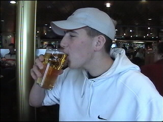
Op 10 augustus 2001 speelde Roda JC een oefenwedstrijd tegen het
Engelse Charlton Athletic (Premier League). Na afloop deden we destijds
de belofte een tegenbezoek te brengen. Vandaag was het zover! Met zes
mensen (Bert, Loes, Marco, Daniëlle, Rik E. en Bjorn) reisden we af
naar The Valley in zuid-oost London.
Marco en Daniëlle namen de trein door de chunnel. De rest ging met de
boot Calais-Dover. Aan boord neemt Rik zijn eerste "pint".
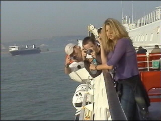
Veel "Japanners"aan boord....
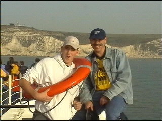
De white clifs of Dover zijn al in zicht, maar Rik houdt toch nog
even zijn zwemband om.
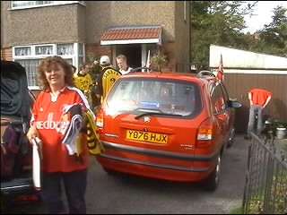
We rijden naar de "mum" van Tracy waar M&D logeren. De overige
reizigers slapen in het gevangenishotel Formule 1 te Barking.
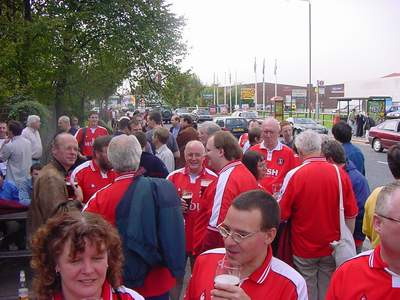
Na een paar flinke pints te hebben genuttigd in The Rose of Denmark,
het plaatselijke Palet...
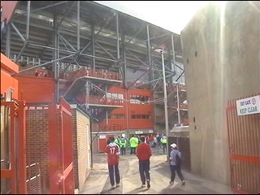
...gaan we naar de "ground".
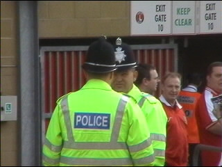
Grappige politie hebben ze hier.
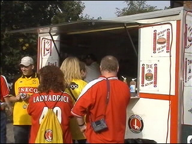
En ouderwetse hamburgertentjes.
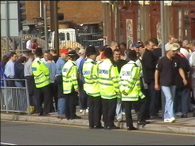
Dit is het café van de uit-supporters.
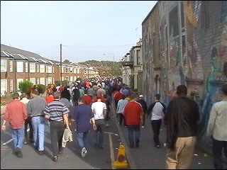
In Engeland liggen de stadions nog vaak midden in de woonwijk. Zo ook
het stadion van Charlton. Van alle kanten stromen de supporters samen
en lopen door de straten naar het stadion "The Valley".
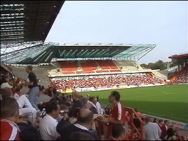
The Valley lijkt een klein beetje op de Galgenwaard en is momenteel
eveneens "under construction". De tribunes worden overdekt en de
hoeken worden dichtgebouwd.
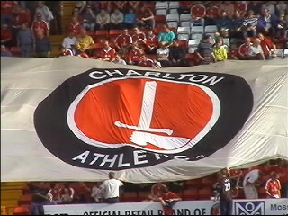
Een enorm doek zwerft over de tribune.
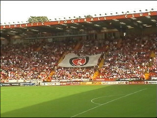
Het stadion is altijd uitverkocht met zijn 20.500 zitplaatsen.